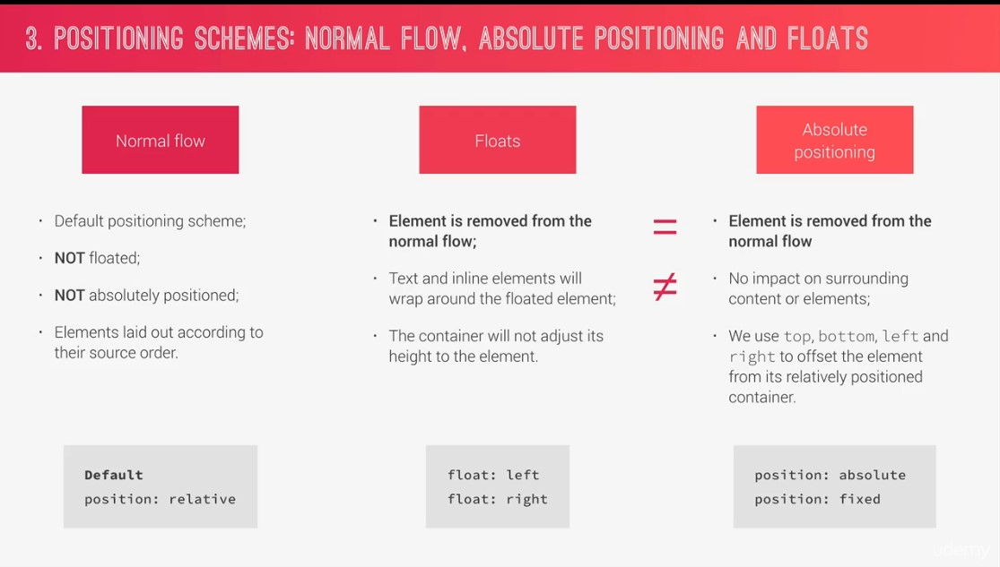
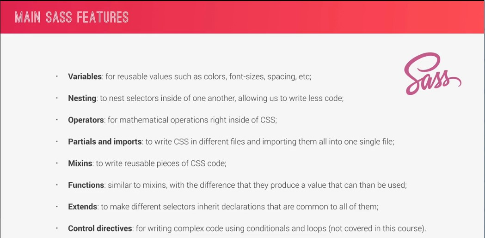

Tricks
Semantic means - that we are using tag for the right content.
/*hides the back part of an element*/
backface-visibility: hidden;
// parang photo filter
background-blend-mode: screen;
// to create a gradient BG with image
background-image: linear-gradient(to right bottom, $color-secondary-light, $color-secondary-dark), url(/img/nat-5.jpg);
// will add space the span of the element. WHATT?
-webkit-box-decoration-break:clone;
box-decoration-break:clone;
object-fit: cover;
__input:focus:invalid {
border-bottom: red;
}
Search for CSS child selector
~ + >
__input:placeholder-shown + __label {
make sure that the label is on below of the input field
- so we can select it correctly
f2v6 | CSS Universal reset
* {
margin: 0;
padding: 0;
box-sizing: border-box;
}
---------------------------------------
every browsers add margin and padding so we need to add this everytime
box-sizing - it change the box model so that the borders and paddings are no longer added to the total width or the total height
- without this any paddings and borders are added to the height or width of an element
Good Practice | To inherit to their child elements
body {
font-family: "Lato", sans-serif;
font-weight: 400;
font-size: 16px ;
line-height: 1.7;
color: #777;
padding: 30px;
}
viewheight - at every point of the box it should
be 95% of the viewport height
linear gradient args - 1. location, 2.color, 3 color,
clip-path: mahirap magets pa.
.header {
height: 95vh ;
background-image: linear-gradient(
to right bottom,
rgba(126, 213, 111, 0.8),
rgba(40, 180, 131, 0.8)),
url(../img/hero.jpg);
background-size: cover;
background-position: center;
clip-path: polygon(100% 0, 100% 70%, 0 100%, 0 0 );
}
}
f2v6 - 006 Building the Header - Part 1
parent container - position relative - para gumana
second container - absolute -
f2v7 - 007 Building the Header - Part 2
display: block - occupy the whole width
to center text - children block need to be display:block
explain - left: 50%; - 50% of the size of the left -
- sa gitna ng main container mag start ung 50% left
- ganun din sa top;
- now to center - is use transform(translate(-50%,-50%))
- so we will remove the relation of 50% of left and 50% to the
- main container, that's why we set it -50%
.text-box {
position: absolute;
top: 50%;
left: 50%;
background-color: red;
transform: translate(-50%,-50%)
}
top:40%;
left: 50%;
are in relation in the main block element
while transform is only related to the main element itself
f2v8 - 008 Creating Cool CSS Animations
animation: moveInLeft 3s ease-out;
@keyframes moveInLeft {
0% {
opacity: 0;
transform: translate(-100px);
}
80% {
transform: translate(10px);
}
100%{
opacity: 1;
transform: translate(0);
}
}
f2v9 - 009 Building a Complex Animated Button - Part 1
go to the style.css
F2v10 na ata to
it'll auto apply the style up to 0% b4 D animation starts
now the style will be applied before the animation starts. simple by using this fill-mode:backwards
*/
animation-fill-mode: backwards;
ang nangyari kasi - kahit mag load ung page - mag appear muna ung button - after that na mag activate ung animation
parang ang alternative is opacity 0 muna ung sa button
then when this animation applies back to 1 na.
f3v012 - 012 Three Pillars of Writing Good HTML and CSS (Never Forget Them)
Responsive Design
Maintainable and scalable code
Web performance
- Reduce http request
f3v013 - 013 How CSS Works Behind the Scenes An Overview

f3v014 - 014 How CSS is Parsed Part 1 The Cascade and Specificity

1st Step Parsing Phase
- Process of combining diferrent style sheets and resolving conflicts between diffrent CSS rules and declarations, when more than one rule applies to a certain element
- default browser declaration are call - BROWSER(USER AGENT)
- it is when the browser auto style our html -
-
SPECIFICITY
From Left To To RIght- !important - has the highes priority
- but only use it as last resource
- starting to most specific category
- inline-style
- if the inline-style has 1 point it will win against all from the image example - because that is the most specific category.

- !important - has the highes priority
- When it has a tie declaration occurs - the last declaration wins

2nd step is to process the finall css value
f3v016 How CSS is Parsed Part 2 Value Processing
em / ems - uses the parent element
rem - uses the root font size element
- 1rem = 10px if the root value is 10px
- because 1 rem is exactly the root font-size

f3v018 Converting px to rem An Effective Workflow
*,
*::after,
*::before {
margin: 0;
padding: 0;
box-sizing: inherit;
html {
/*
100% is equal to 16px - but we only want it 10px
so the computation 10/16 = .625 * 100%
simple but very powerful on media-querries
- this will allow user to zoom in page automatically
- not only to change the font size but also to zoom in on the page
a widely use technique CSS Dev Community
but not supported below IE 9
*/
font-size: 62.5%;
}
f3v19 - 019 How CSS Renders a Website The Visual Formatting Model

f3020 CSS Architecture Components and BEM
BEM - Block Element Modifier
base - basic product definitions
- animation, base, typography
- _base - html, body, *
- _typography - heading primary
components - one file for each component
- button
layout - where we define the overall layout of the project
- header
pages - where we have styles for specific pages of the project
- home
themes - if we want to implement different visual themes
-
abstracts - where we put code that doesn't output any CSS, such as variables or mix-ins
- functions, mixins, variable
vendor - where all third party css goes
- bootstrap, bulma, or icon system or animation framework
f3v021 Implementing BEM in the Natours Project
f4v023 What is Sass

Sass Syntax - rely on indentation and has no bracketing, confusing.
f4v024 First Steps with Sass Variables and Nesting
Codepen - I dont like it.
f4v027 NPM Packages Lets Install Sass Locally
npm init
npm install node-sass --save-dev
npm uninstall node-sass --save-dev
f4v028 NPM Scripts Lets Write and Compile Sass Locally
{
"name": "natours",
"version": "1.0.0",
"description": "1st Course CSS and SASS SCSS",
"main": "index.js",
"scripts": {
"compile:sass": "node-sass sass/main.scss css/style.css"
},
"author": "Sambee",
"license": "ISC",
"devDependencies": {
"node-sass": "^4.14.1"
}
}
input file sass/main.scss
output file css/style.css
To watch our main.scss file so we dont need to reload everytime
"compile:sass": "node-sass sass/main.scss css/style.css -w"
-we add (-w) w means watch
- so just by saving ctrl+s - it will auto compile.
f4v029 The Easiest Way of Automatically Reloading a Page on File Changes
npm live server
brackets has this already
f5v031 Converting Our CSS Code to Sass Variables and Nesting
ampersand is the king of nesting :D
&__
f5v032 Implementing the 7-1 CSS Architecture with Sass
_base - real low level basics
- resets and style for HTML and body element selectors
to import
@import "base/base
f5v034 Building a Custom Grid with Floats
go to /sass/layout/_grids.scss
f5035 Building the About Section - Part 1
we create /base/_utilities
- margin bottom
- text center
f5v036 Building the About Section - Part 2
f5v037 Building the About Section - Part 3
f5v038 Building the Features Section
/*selects only the direct children*/
& > * {
transform: skewY(7deg);
}
f5v039 Building the Tours Section - Part 1
f5v040 Building the Tours Section - Part 2
CARDS
/*hides the back part of an element*/
backface-visibility: hidden;
we create the card tours - with rotate animation
we create 2 div - we made it absolute position
using backface-visibility: hidden, we hide the back face lement of it
then rotate it using transform rotateY
f5v041 Building the Tours Section - Part 3
f5v042 Building the Stories Section - Part 1
making the text change its starting point of shape
f5v043 Building the Stories Section - Part 2
object-fit
.bg-video {
position: absolute;
top:0 ;
left: 0;
height: 100%;
width: 100%;
z-index: -1;
opacity: .15;
&__content {
height: 100%;
width: 100%;
object-fit: cover;
}
}
f5v044 Building the Stories Section - Part 3
f5v045 Building the Booking Section - Part 1
making an input on border bottom line like a focus error or correct
&__input {
font-size: 1.5rem;
font-family: inherit;
padding: 1.5rem 2rem;
border-radius: 2px;
background-color: rgba($color-white, .5);
border: none;
border-bottom: 3px solid transparent;
display: block;
width: 90%;
color: inherit;
&:focus {
outline: none;
box-shadow: 0 1rem 2rem rgba($color-black, .1);
border-bottom: 3px solid $color-primary-dark;
&:invalid {
border-bottom: 3px solid red;
}
f5v046 Building the Booking Section - Part 2
__input:placeholder-shown + &__label {
opacity: 0;
visibility: hidden;
transform: translateY(-4rem);
making the text on label animate
f5v047 Building the Booking Section - Part 3
just go to _form.scss
and look for form section on HTML
f5v048 Building the Footer
just go to _footer.scss
and look for form section on HTML
f5v049 Building the Navigation - Part 1
f5v50 Building the Navigation - Part 2